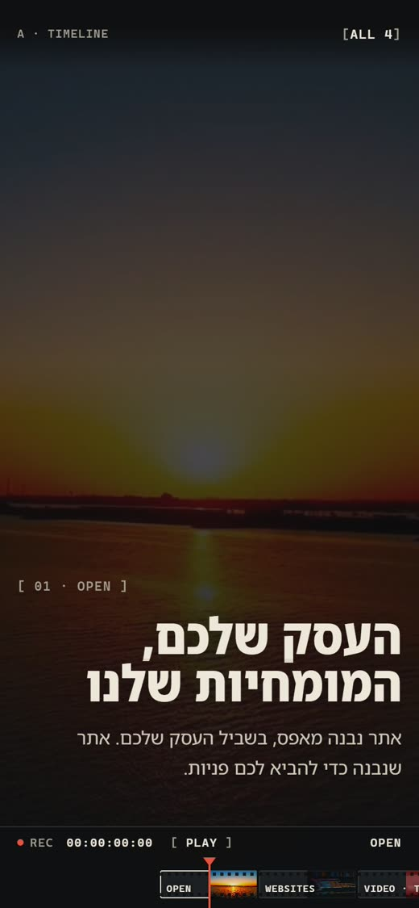
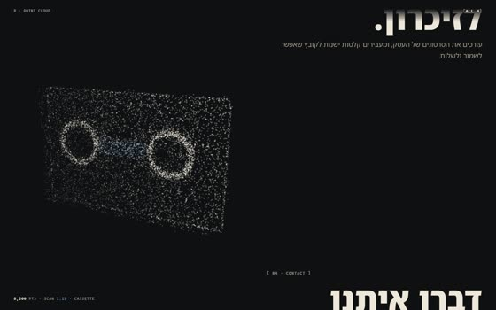
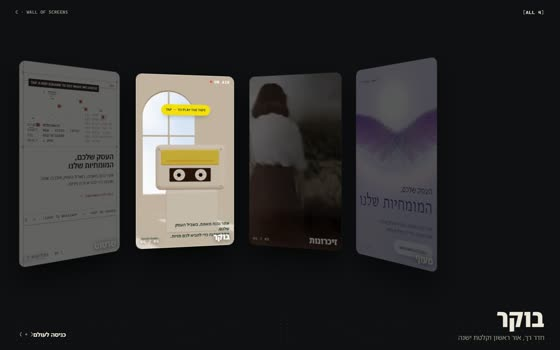
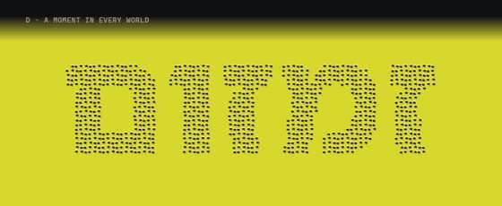

כל הצעה לקוחה מרגע שזכה ב-Site of the Day בחודש האחרון, ומתורגמת לעולם של MediaWave: עריכה, קלטות, אתרים ונקודות. פתחו כל אחת בטלפון, גללו, גררו ונגעו. בוחרים אחת או יותר, ורק אז בונים באתר.

כל האתר הוא עריכה: הגלילה היא ראש ההקרנה.

לים הנקודות יש עומק.

העולמות על קיר מוניטורים בחדר עריכה.

ארבעה עולמות, ארבעה רגעים שמספרים עליהם.
ההמלצה שלי: A לדף הבית, כי רק אתר של מי שעורך וידאו יכול להפוך את הגלילה לעריכה, והוא גם ניווט אמיתי בטלפון. ואם רוצים גם את העולמות, C ו-D יחד.